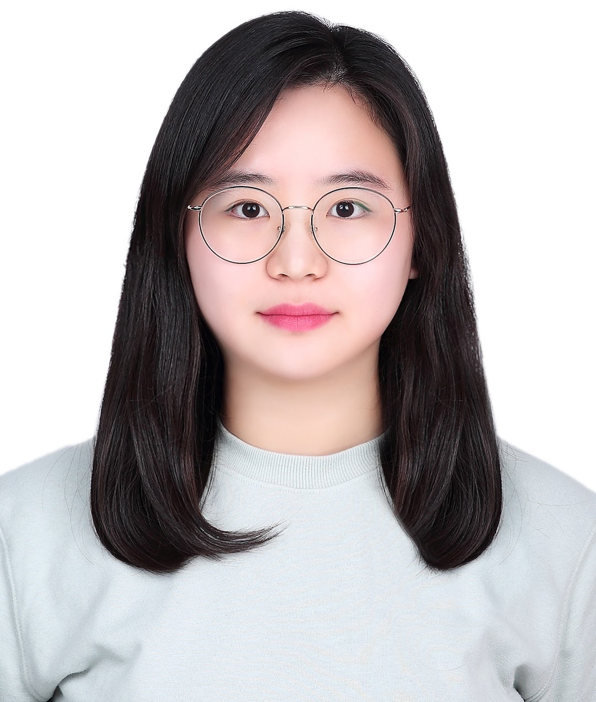
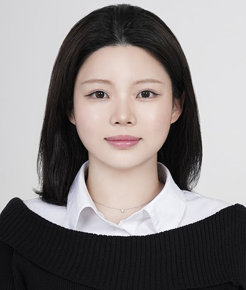

신선, M.D., Ph.D.
Sun Shin
Principal Investigator
임상 정보와 유전체 데이터를 통합하여 질병의 진행과 염증 반응, 전이, 숙주-미생물 상호작용을 연구합니다. 유전체 진화, 돌연변이와 유전자 발현, 단일세포 시퀀싱, host-microbiota multiomics 연구를 임상적으로 활용 가능한 표적과 바이오마커로 연결합니다.
PEOPLE
의학, 생명과학, 유전체학과 데이터과학의 서로 다른 관점을 연결해 더 좋은 연구 질문을 만듭니다.
PRINCIPAL INVESTIGATOR
Sun Shin
Principal Investigator
임상 정보와 유전체 데이터를 통합하여 질병의 진행과 염증 반응, 전이, 숙주-미생물 상호작용을 연구합니다. 유전체 진화, 돌연변이와 유전자 발현, 단일세포 시퀀싱, host-microbiota multiomics 연구를 임상적으로 활용 가능한 표적과 바이오마커로 연결합니다.
LAB MEMBERS

Postdoctoral Researcher
포스닥
Graduate Student
박사과정

Graduate Student
박사과정

Graduate Student
석사과정
Researcher
석사후연구원
ALUMNI
남상호
Alumni · 석사과정